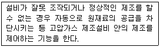

가스기능사 (2012-10-20 기출문제)
1과목: 가스안전관리
1. 도시가스사용시설에서 배관의 용접부 중 비파괴시험을 하여야 하는 것은?
- 가스용 폴리에틸렌관
- 호칭지름 65㎜인 매몰된 저압배관
- 호칭지름 150㎜인 노출된 저압배관
- 호칭지름 65㎜인 노출된 중압배관
(정답률: 69%)

2. 고압가스 특정제조시설 중 비가연성 가스의 저장탱크는 몇 m3 이상일 경우에 지진영향에 대한 안전한 구조로 설계하여야 하는가?
- 300
- 500
- 1000
- 2000
(정답률: 69%)
3. 다음은 어떤 안전설비에 대한 설명인가?

- 안전밸브
- 긴급차단장치
- 인터록기구
- 벤트스택
(정답률: 90%)
4. 0℃, 1atm에서 6L인 기체가 273℃, 1atm일 때 몇 L가 되는가?
- 4
- 8
- 12
- 24
(정답률: 68%)
5. 다음 가스 중 폭발범위의 하한값이 가장 높은 것은?
- 암모니아
- 수소
- 프로판
- 메탄
(정답률: 54%)
6. 일반도시가스 공급시설의 시설기준으로 틀린 것은?
- 가스공급 시설을 설치한 곳에는 누출된 가스가 머물지 아니하도록 환기설비를 설치한다.
- 공동구 안에는 환기장치를 설치하며 전기설비가 있는 공동구에는 그 전기설비를 방폭구조로 한다.
- 저장탱크의 안전장치인 안전밸브나 파열판에는 가스방출관을 설치한다.
- 저장탱크의 안전밸브는 다이어프램식 안전밸브로 한다.
(정답률: 76%)
7. 다음 중 2중관으로 하여야 하는 고압가스가 아닌 것은?
- 수소
- 아황산가스
- 암모니아
- 황화수소
(정답률: 62%)
8. 고압용기에 각인되어 있는 내용적의 기호는?
- V
- FP
- TP
- W
(정답률: 74%)
9. 고압가스의 충전 용기를 차량에 적재하여 운반하는 때의 기준에 대한 설명으로 옳은 것은?
- 염소와 아세틸렌 충전 용기는 동일 차량에 적재하여 운반이 가능하다.
- 염소와 수소 충전 용기는 동일 차량에 적재하여 운반이 가능하다.
- 독성가스가 아닌 300m3의 압축 가연성 가스를 차량에 적재하여 운반하는 때에는 운반책임자를 동승시켜야 한다.
- 독성가스가 아닌 2천 kg의 액화 조연성 가스를 차량에 적재하여 운반하는 때에는 운반책임자를 동승시켜야 한다.
(정답률: 71%)
10. 고압가스 특정제조시설에서 배관을 해저에 설치하는 경우의 기준으로 틀린 것은?
- 배관은 해저면 밑에 매설한다.
- 배관은 원칙적으로 다른 배관과 교차하지 아니하여야 한다.
- 배관은 원칙적으로 다른 배관과 수평거리로 20m 이상을 유지하여야 한다.
- 배관의 입상부에는 방호시설물을 설치한다.
(정답률: 82%)
11. 도시가스사업법상 제1종 보호시설이 아닌 것은?
- 아동 50명이 다니는 유치원
- 수용인원이 350명인 예식장
- 객실 20개를 보유한 여관
- 250세대 규모의 개별난방 아파트
(정답률: 75%)
12. 가스도매사업의 가스공급시설에서 배관을 지하에 매설할 경우의 기준으로 틀린 것은?
- 배관을 시가지 외의 도로 노면 밑에 매설할 경우 노면으로부터 배관 외면까지 1.2m 이상 이격할 것
- 배관의 깊이는 산과 들에서는 1m 이상으로 할 것
- 배관을 시가지의 도로 노면 밑에 매설할 경우 노면으로부터 배관 외면까지 1.5m 이상 이격할 것
- 배관을 철도부지에 매설할 경우 배관 외면으로부터 궤도 중심까지 5m 이상 이격할 것
(정답률: 72%)
13. 다음 중 LNG의 주성분은?
- CH4
- CO
- C2H4
- C2H2
(정답률: 90%)
14. 방폭전기 기기의 구조별 표시방법으로 틀린 것은?
- 내압방폭구조 - s
- 유입방폭구조 - o
- 압력방폭구조 - p
- 본질안전방폭구조 - ia
(정답률: 77%)
15. 아세틸렌 제조설비의 기준에 대한 설명으로 틀린 것은?
- 압축기와 충전장소 사이에는 방호벽을 설치한다.
- 아세틸렌 충전용 교체밸브는 충전장소와 격리하여 설치한다.
- 아세틸렌 충전용 지관에는 탄소 함유량이 0.1% 이하의 강을 사용한다.
- 아세틸렌에 접촉하는 부분에는 동 또는 동 함유량이 72% 이하의 것을 사용한다.
(정답률: 85%)
16. 가연성가스 및 방폭 전기기기의 폭발등급 분류 시 사용하는 최소점화전류비는 어느 가스의 최소 점화전류를 기준으로 하는가?
- 메탄
- 프로판
- 수소
- 아세틸렌
(정답률: 70%)
17. 고압가스 배관에 대하여 수압에 의한 내압시험을 하려고 한다. 이때 압력은 얼마 이상으로 하는가?
- 사용압력×1.1배
- 사용압력×2배
- 상용압력×1.5배
- 상용압력×2배
(정답률: 80%)
18. 다음 중 가연성이면서 독성인 가스는?
- 아세틸렌, 프로판
- 수소, 이산화탄소
- 암모니아, 산화에틸렌
- 아황산가스, 포스겐
(정답률: 77%)
19. 고압가스 냉동제조의 시설 및 기술기준에 대한 설명으로 틀린 것은?
- 냉동제조시설 중 냉매설비에는 자동제어장치를 설치할 것
- 가연성가스 또는 독성가스를 냉매로 사용하는 냉매설비 중 수액기에 설치하는 액면계는 환형유리관액면계를 사용할 것
- 냉매설비에는 압력계를 설치할 것
- 압축기 최종단에 설치한 안전장치는 1년에 1회 이상 점검을 실시할 것
(정답률: 71%)
20. 허용농도가 100만분의 200 이하인 독성가스 용기운반차량은 몇 km 이상의 거리를 운행할 때 중간에 충분한 휴식을 취한 후 운행하여야 하는가?
- 100km
- 200km
- 300km
- 400km
(정답률: 81%)
21. 도시가스사용시설에서 입상관과 화기사이에 유지하여야 하는 거리는 우회거리 몇 m 이상 인가?
- 1m
- 2m
- 3m
- 5m
(정답률: 76%)
22. 일반도시가스사업자는 공급권역을 구역별로 분할하고 원격조작에 의한 긴급차단장치를 설치하여 대형가스누출, 지진발생 등 비상 시 가스차단을 할 수 있도록 하고 있는데 이 구역의 설정기준은?(오류 신고가 접수된 문제입니다. 반드시 정답과 해설을 확인하시기 바랍니다.)
- 수요자 수가 20만 미만이 되도록 설정
- 수요자 수가 25만 미만이 되도록 설정
- 배관길이가 20km 미만이 되도록 설정
- 배관길이가 25km 미만이 되도록 설정
(정답률: 61%)
23. 방류둑의 성토는 수평에 대하여 몇 도 이하의 기울기로 하여야 하는가?
- 30°
- 45°
- 60°
- 75°
(정답률: 81%)
24. 도시가스공급시설에 대하여 공사가 실시하는 정밀안전진단의 실시시기 및 기준에 의거 본관 및 공급관에 대하여 최초로 시공감리증명서를 받은 날부터 ( )년이 지난날이 속하는 해 및 그 이후 매 ( )년이 지난날이 속하는 해에 받아야 한다. ( )안에 각각 들어갈 숫자는?
- 10, 5
- 15, 5
- 10, 10
- 15, 10
(정답률: 68%)
25. 가스제조시설에 설치하는 방호벽의 규격으로 옳은 것은?
- 철근콘크리트 벽으로 두께 12㎝ 이상, 높이 2m 이상
- 철근콘크리트블록 벽으로 두께 20㎝ 이상, 높이 2m 이상
- 박강판 벽으로 두께 3.2㎝ 이상, 높이 2m 이상
- 후강판 벽으로 두께 10mm 이상, 높이 2.5m 이상
(정답률: 81%)
26. 고압가스에 대한 사고예방설비기준으로 옳지 않은 것은?
- 가연성가스의 가스설비 중 전기설비는 그 설치장소 및 그 가스의 종류에 따라 적절한 방폭성능을 가지는 것일 것
- 고압가스설비에는 그 설비안의 압력이 내압압력을 초과하는 경우 즉시 그 압력을 내압압력 이하로 되돌릴 수 있는 안전장치를 설치하는 등 필요한 조치를 할 것
- 폭발 등의 위해가 발생할 가능성이 큰 특수반응설비에는 그 위해의 발생을 방지하기 위하여 내부반응감시 설비 및 위험사태발생 방지설비의 설치 등 필요한 조치를 할 것
- 저장탱크 및 배관에는 그 저장탱크 및 배관이 부식되는 것을 방지하기 위하여 필요한 조치를 할 것
(정답률: 66%)
27. 다음 중 풍압대와 관계없이 설치할 수 있는 방식의 가스 보일러는?
- 자연배기식(CF) 단독배기통 방식
- 자연배기식(CF) 복합배기통 방식
- 강제배기식(FE) 단독배기통 방식
- 강제배기식(FE) 공동배기구 방식
(정답률: 73%)
28. 고압가스 저장탱크 및 가스홀더의 가스방출장치는 가스 저장량이 몇 m3 이상인 경우 설치하여야 하는가?
- 1m3
- 3m3
- 5m3
- 10m3
(정답률: 53%)
29. 액화석유가스 저장탱크에 가스를 충전하고자 한다. 내용적이 15m3 인 탱크에 안전하게 충전할 수 있는 가스의 최대 용량은 몇 m3인가?
- 12.75
- 13.5
- 14.25
- 14.7
(정답률: 60%)
30. 고압가스특정제조시설에서 플레어스택의 설치기준으로 틀린 것은?
- 파이롯트버너를 항상 꺼두는 등 플레어스택에 관련된 폭발을 방지하기 위한 조치가 되어 있는 것으로 한다.
- 긴급이송설비로 이송되는 가스를 안전하게 연소시킬 수 있는 것으로 한다.
- 플레어스택에서 발생하는 복사열이 다른 제조시설에 나쁜 영향을 미치지 아니하도록 안전한 높이 및 위치에 설치한다.
- 플레어스택에서 발생하는 최대열량에 장시간 견딜 수 있는 재료 및 구조로 되어 있는 것으로 한다.
(정답률: 70%)
2과목: 가스장치 및 기기
31. 관 도중에 조리개(교축기구)를 넣어 조리개 전후의 차압을 이용하여 유량을 측정하는 계측기기는?
- 오벌식 유량계
- 오리피스 유량계
- 막식 유량계
- 터빈 유량계
(정답률: 85%)
32. 유리 온도계의 특징에 대한 설명으로 틀린 것은?
- 일반적으로 오차가 적다.
- 취급은 용이하나 파손이 쉽다.
- 눈금 읽기가 어렵다.
- 일반적으로 연속 기록 자동제어를 할 수 있다.
(정답률: 77%)
33. C4H10의 제조시설에 설치하는 가스누출 경보기는 가스누출 농도가 얼마일 때 경보를 울려야 하는가?
- 0.45% 이상
- 0.53% 이상
- 1.8% 이상
- 2.1% 이상
(정답률: 53%)
34. 재료에 하중을 작용하여 항복점 이상의 응력을 가하면, 하중을 제거하여도 본래의 형상으로 돌아가지 않도록 하는 성질을 무엇이라고 하는가?
- 피로
- 크리프
- 소성
- 탄성
(정답률: 70%)
35. 카플러안전기구와 과류차단안전기구가 부착된 것으로서 배관과 카플러를 연결하는 구조의 콕은?
- 퓨즈콕
- 상자콕
- 노즐콕
- 커플콕
(정답률: 63%)
36. 펌프가 운전 중에 한숨을 쉬는 것과 같은 상태가 되어 토출구 및 흡입구에서 압력계의 바늘이 흔들리며 동시에 유량이 변화하는 현상을 무엇이라고 하는가?
- 캐비테이션
- 워터햄머링
- 바이브레이션
- 서징
(정답률: 77%)
37. 자유 피스톤식 압력계에서 추와 피스톤의 무게가 15.7kg일 때 실린더 내의 액압과 균형을 이루었다면 게이지 압력은 몇 kg/cm2이 되겠는가? (단, 피스톤의 지름은 4㎝이다.)
- 1.25kg/cm2
- 1.57kg/cm2
- 2.5kg/cm2
- 5kg/cm2
(정답률: 40%)
38. 다음 중 저온장치의 가스 액화 사이클이 아닌 것은?
- 린데식 사이클
- 클라우드식 사이클
- 필립스식 사이클
- 카자레식 사이클
(정답률: 64%)
39. 자동차에 혼합 적재가 가능한 것끼리 연결된 것은?
- 염소 - 아세틸렌
- 염소 - 암모니아
- 염소 - 산소
- 염소 - 수소
(정답률: 63%)
40. 왕복식 압축기에서 피스톤과 크랭크샤프트를 연결하여 왕복운동을 시키는 역할을 하는 것은?
- 크랭크
- 피스톤링
- 커넥팅로드
- 톱클리어런스
(정답률: 73%)
41. 실린더의 단면적 50cm2, 행정 10㎝, 회전수 200rpm, 체적 효율 80%인 왕복 압축기의 토출량은?
- 60L/min
- 80L/min
- 120L/min
- 140L/min
(정답률: 52%)
42. 액화천연가스(LNG)저장탱크 중 내부탱크의 재료로 사용되지 않는 것은?
- 자기 지지형(Self Supporting) 9% 니켈강
- 알루미늄 합금
- 멤브레인식 스테인레스강
- 프리스트레스트 콘크리트(PC, Prestressed Concrete)
(정답률: 64%)
43. 공기에 의한 전열은 어느 압력까지 내려가면 급히 압력에 비례하여 적어지는 성질을 이용하는 저온장치에 사용되는 진공단열법은?
- 고진공 단열법
- 분말 진공 단열법
- 다층진공 단열법
- 자연진공 단열법
(정답률: 68%)
44. 고압식 액체산소분리장치에서 원료공기는 압축기에서 압축된 후 압축기의 중간단에서는 몇 atm 정도로 탄산가스 흡수기에 들어가는가?
- 5atm
- 7atm
- 15atm
- 20atm
(정답률: 52%)
45. 펌프의 축봉 장치에서 아웃사이드 형식이 쓰이는 경우가 아닌 것은?
- 구조재, 스프링재가 액의 내식성에 문제가 있을 때
- 점성계수가 100cP를 초과하는 고점도 액일 때
- 스타핑 복스 내가 고진공일 때
- 고 응고점 액일 때
(정답률: 60%)
3과목: 가스일반
46. 가스누출자동차단기의 내압시험 조건으로 맞는 것은?
- 고압부 1.8MPa 이상, 저압부 8.4~10kPa
- 고압부 1MPa 이상, 저압부 0.1MPa 이상
- 고압부 2MPa 이상, 저압부 0.2MPa 이상
- 고압부 3MPa 이상, 저압부 0.3MPa 이상
(정답률: 50%)
47. 염소의 특징에 대한 설명 중 틀린 것은?
- 염소 자체는 폭발성, 인화성은 없다.
- 상온에서 자극성의 냄새가 있는 맹독성 기체이다.
- 염소와 산소의 1:1 혼합물을 염소폭명기라고 한다.
- 수분이 있으면 염산이 생성되어 부식성이 강해진다.
(정답률: 72%)
48. 다음 중 불꽃의 표준온도가 가장 높은 연소방식은?
- 분젠식
- 적화식
- 세미분젠식
- 전 1차 공기식
(정답률: 54%)
49. 도시가스의 유해성분을 측정하기 위한 도시가스품질검사의 성분분석은 주로 어떤 기기를 사용하는가?
- 기체크로마토그래피
- 분자흡수분광기
- NMR
- ICP
(정답률: 87%)
50. 다음 중 독성도 없고 가연성도 없는 기체는?
- NH3
- C2 H4O
- CS2
- CHCIF2
(정답률: 67%)
51. 다음 중 드라이아이스의 제조에 사용되는 가스는?
- 일산화탄소
- 이산화탄소
- 아황산가스
- 염화수소
(정답률: 83%)
52. 가스의 비열비의 값은?
- 언제나 1보다 작다.
- 언제나 1보다 크다.
- 1보다 크기도 하고 작기도 하다.
- 0.5와 1사이의 값이다.
(정답률: 75%)
53. 염화수소(HCI)의 용도가 아닌 것은?
- 강판이나 강재의 녹 제거
- 필름 제조
- 조미료 제조
- 향료, 염료, 의약 등의 중간물 제조
(정답률: 61%)
54. 국가표준기본법에서 정의하는 기본단위가 아닌 것은?
- 질량 - kg
- 시간 - s
- 전류 - A
- 온도 - ℃
(정답률: 72%)
55. 47L 고압가스 용기에 20℃의 온도로 15MPa의 게이지압력으로 충전하였다. 40℃ 로 온도를 높이면 게이지압력은 약 얼마가 되겠는가?
- 16.031MPa
- 17.132MPa
- 18.031MPa
- 19.031MPa
(정답률: 36%)
56. 10%의 소금물 500g을 증발시켜 400g으로 농축하였다면 이 용액은 몇 % 의 용액인가?
- 10
- 12.5
- 15
- 20
(정답률: 66%)
57. 천연가스(NG)의 특징에 대한 설명으로 틀린 것은?
- 메탄이 주성분이다.
- 공기보다 가볍다.
- 연소에 필요한 공기량은 LPG에 비해 적다.
- 발열량(kcal/m3 )은 LPG에 비해 크다.
(정답률: 68%)
58. 다음 중 암모니아 가스의 검출방법이 아닌 것은?
- 네슬러시약을 넣어 본다.
- 초산연 시험지를 대어본다.
- 진한 염산에 접촉시켜 본다.
- 붉은 리트머스지를 대어본다.
(정답률: 56%)
59. 다음 중 표준상태에서 비점이 가장 높은 것은?
- 나프타
- 프로판
- 에탄
- 부탄
(정답률: 47%)
60. 절대온도 300K 는 랭킨온도(° R)로 약 몇 도인가?
- 27
- 167
- 541
- 572
(정답률: 66%)